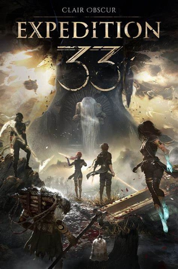

2025年6月
广播发布后不可编辑，所以每条都是那一刻的原话。
2025-06-28 09:41:58
 想看 芙蓉镇
想看 芙蓉镇
2025-06-28 08:52:15

2025-06-27 17:41:21

2025-06-22 11:50:21

剧情很简单，但是双方勾心斗角的内容很是猎奇。逻辑上很多依然是不成立的，但是只有这样才能拍成片，比如这个女主能力太太太太强了，拍成一个连续剧都不为过，然后电影相当于只是一个片段。
2025-06-21 06:25:37
 想看 歌剧魅影 / The Phantom of the Opera
想看 歌剧魅影 / The Phantom of the Opera
2025-06-21 06:25:22

第一遍没看懂，看了评论才知道说的是死后世界。。。剧情瞬间变深刻，我死后也想去到这样的世界 //安妮海瑟薇还演过这
2025-06-20 18:55:25
看着好像刺客信条
2025-06-16 20:05:57

Family comes first，滚蛋吧工作君。男主很像《速度与激情》里面的多米尼克，然后才发现女主竟然是《珍珠港》里的。虽然是个挺老的电影，但是不少眼熟的面孔，台词虽然老套但是依然很搞笑。总体来说还挺感人的，剧情也非常有趣。人生如果把各种琐屑都快进了，那就不剩下什么了。虽然工作可能更有趣些，毕竟有着做不完的项目，但是生活才是应该比工作更有趣的。
2025-06-15 15:24:45
安妮海瑟薇还演过这
2025-06-15 15:23:15

设定很有意思，5000多个人的飞船上只有自己醒着，不出意外地变出来了一个女主。但是细节部分有些牵强，毕竟机组人员为什么一个都不能帮忙；然后这么长时间的航行，竟然没有研究出来更快的通讯技术/AI技术，是啥公司也没法这么运营啊，发一个火箭让他飞120年，公司要验证一个产品要得几百年，不能细究，越想越觉得离谱。
2025-06-12 04:19:32
 想看 惊魂记 / Psycho
想看 惊魂记 / Psycho
原来LA universal的studio tour里面持刀演的是这一段
2025-06-09 14:52:49
 看过 铁血战士：杀戮之王 / Predator: Killer of Killers
看过 铁血战士：杀戮之王 / Predator: Killer of Killers
开始两个猎杀特别相似，以至于我都差点要弃了，然后到最后一个才发现是穿越时空的猎杀，然后是按照时间线来的，都是人类战胜了铁血战士。但是最后的格斗场瞬间把这个剧个升华了，有意思了起来，所以恢复3星吧。
2025-06-09 14:41:30

算是体验了下深海潜水工作，包括潜水钟、加压舱减压舱之类的，和《海女》的感觉很不一样，这个感觉真的很危险。总体剧情停紧凑的，虽然很多流程故意拖了些时间，比如重启船的自动定位装置的那一段，真实情况下重新接线有点不太符合常理了，毕竟那么精密的一个系统。
2025-06-07 18:15:17
 看过 好东西
看过 好东西
很早就标记了，才想起来看。这片儿总体感觉就是一个很新颖的感觉，虽然都是文艺片、虽然也都是说自由的主题，但是和以往那些常见的情情爱爱的文艺片截然不同，主题前卫很多。可能也是因为主角们的年龄段也不同了，所以很贴近生活。第一章《我不再幻想》，开始还以为是一个很消极的主题，但是没想到片尾的时候才知道是出自女主在女儿出生的那年写的文章。现在的女主那么的自由、洒脱，可以看出来有孩子前和有孩子后的心态转变。引用“大聪”的评论“全片最喜欢的一组镜头，是小叶让王茉莉猜那些音效出自哪里，暴雨，打雷，熊猫吃竹子，飞船启动，这些在小孩脑子里的奇思妙想，都是出自她母亲繁琐的家务或工作，这是容易被忽视但需要被听到的声音。” 整部电影时而像是两个母亲带一个小孩，时而又像一个母亲带两个小孩，温馨。//2024豆瓣榜单
2025-06-07 14:21:50

2025-06-03 20:44:07
 看过 逃避虽可耻但有用 新春特别篇 / 逃げるは恥だが役に立つ ガンバレ人類! 新春スペシャル!!
看过 逃避虽可耻但有用 新春特别篇 / 逃げるは恥だが役に立つ ガンバレ人類! 新春スペシャル!!
这是两集的SP，非常有爱了！！印象最深刻的就是说女主自己的压力得到了释放，但是男主没有人可以诉说只能自己默默承受，然后请了保洁，太有爱了。另，原来亚洲人面对covid都是一个样，非常紧张；不像鬼佬不当回事，甚至觉得有阴谋
2025-06-03 20:40:46
看过
oh原来我看的是这个版本！！还真是covid前期发布的
2025-06-03 20:34:49

最开始是觉得主题曲好听，然后关注了，看完之后感觉各种巧思和小思考都好有道理啊，而且非常有共鸣。SP里面把整个孕期都涵盖了，真的感觉好真实。最离谱的是最后的SP怎么就到2020年了，然后还有covid，然后取景真的就是街上一个人都没有，太牛了。总体来说也是属于略平淡但也挺有趣的日剧！